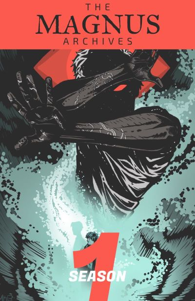
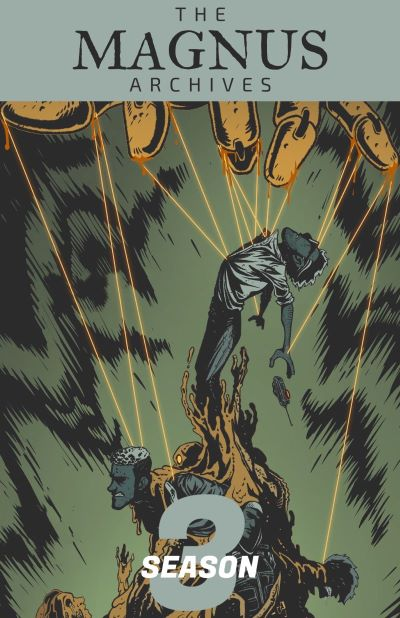
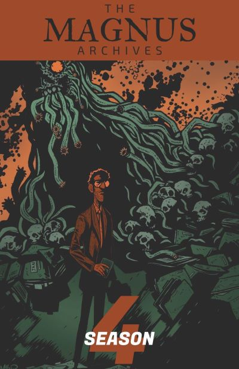
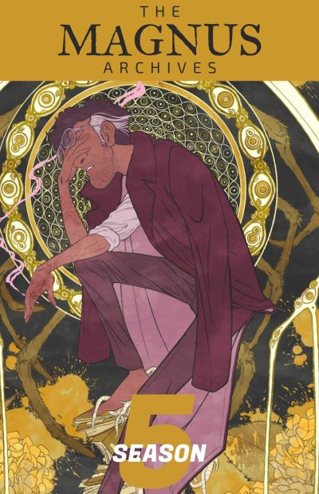

Вся інформація, подана у цьому проєкті, є дуже скороченою! Для повноцінного досвіду прослухайте оригвнольний подкаст або почитайте офіційну вікі
Джон починає роботу з роздратування з Ґертруди та нехтування багатьма випадками, вважаючи, що звітів про справді таємничі чи езотеричні мізерно мало, хоча події у архівах починають здаватись тривожними. Він зробив майже всі аудіозаписи для архівів. Йому допомагають архівні дослідники Мартін Блеквуд, Саша Джеймс і Тім Стокер, хоча він, здається, особливо неповажливо ставиться до Мартіна. Джонатан Сімс прагне оцифрувати архіви; однак спроби записати певні випадки на його ноутбук викликали значні спотворення звуку, тому йому довелося погодитися на запис на архаїчний магнітофон. Після зустрічі Мартіна з Джейн Прентіс і її подальшої облоги Інституту він дедалі більше і більше стурбований небезпекою своєї роботи, включаючи відчуття того, що на нього та його колег полюють. Джон переживає напад Прентіс зі шрамами від червів і значною психологічною травмою. Він переконаний, що смерть Гертруди Робінсон не була природною, і в цих заявах є ще якась таємниця. Він вважає, що її вбив хтось в архіві за те, що вона знала, і налаштований знайти правду.
Після нападу на архіви Джон змушений взяти місячну відпустку, щоб відновитися. Після розкриття вбитого попередника його параноя посилюється, і Джон починає підозрювати всіх співробітників архіву. Він починає зберігати два магнітофони - звичайний і другий додатковий, щоб записати свої підозри, коли він починає шпигувати за персоналом Деякий час відпустки він пробирається на роботу вночі, щоб досліджувати тунелі під Інститутом. Він веде хроніку своїх досліджень, знаходячи докази того, що хтось живе в тунелях, але зрештою припиняє дослідження після жахливої зустрічі на одному з нижчих рівнів. Згодом Джон розуміє, що Сашу, його співробітницю, замінили на так звану Не-Сашу(див. The Stranger). Джон бере сокиру до столу з павутинням, який зберігається в сховищі артефактів, знаючи, що він пов’язаний із тим, що захопило Сашу, і сподіваючись знищити його, але виявляє, що стіл насправді зв’язував і обмежив його силу. Джон тікає від звільненої Не-Саші, перш ніж його рятує Юрген Лейтнер, який жив у тунелях. Ляйтнер розповідає йому про існування Сутностей; що Інститут є місцем сили для сутності, відомої як «Спостерігання»(див. The Eye ), і що він теж до неї належить. Джон приголомшений і йде покурити, але Лейтнера вбиває Еліас Бушар, голова Інституту, до його повернення.
Розшукуваний за вбивство Лейтнера, Джон ховається в будинку Джорджі Баркер і просить одну з нових співробітниць - Мелані - знайти для нього інформацію в архіві, поки він не може повернутися. Він йде до Джуд Перрі (див. The Desolation) та Майкла Крю (див. The Vast) за інформацією. Коли Майкл Крю закінчує свою розповідь, офіцер поліції Еліс «Дейзі» Тоннер неочікувано зєявляється на порозі і намагається вбити Джона. Басіра Хусейн, інша поліцейська, рятує його, і вони йдуть допитувати Еліаса про вбивство Ґертруди. Пізніше Джон і Дейзі захоплюють і допитують Сару Болдуін про ритуал Занезнання (див. The Stranger), що привертає увагу Ніколи Орсінов, який спочатку намагається змусити його знайти стародавню шкіру горили, яку вкрала Ґертруда, але пізніше викрадає його, маючи намір використати його шкіру для ритуалу. Джона рятують, після чого він подорожує Китаєм і Америкою. В Америці він знайомиться з Тревором Гербертом і Джулією Монток. Він розмовляє з Джерардом Кі в каталозі захоплених мертвих і дізнається про сутності більш детально. Після тижневої відсутності в інституті він з’ясовує, що має «фізичну залежність» від показань про паранормальне, і врешті-решт захворює, якщо надто довго обходиться без них. Джон зупиняє Занезнання за допомогою своїх помічників, але потрапляє в кому.
Під час шестимісячної коми Джона відвідує Олівер Бенкс, який розповідає, що смерть є останнім кроком, необхідним для того, щоб стати аватаром сутності. Джон падає на лінію, а потім прокидається від коми. Згодом він починає називати себе «Архівістом», відзначаючи свою згоду бути аватаром The Eye. Після того, як він вийшов із лікарні, він поновив свою роботу в архіві та повернувся, щоб побачити, що Мелані та Басіра переїхали до Інституту, оскільки надворі надто небезпечно, Тім мертвий, Дейзі зникла, а Мартін відсутній. Він хвилюється, що Мартін працює з Пітером Лукасом аватаром The Lonely та патроном Еліаса, але стримується подалі після того, як Мартін просить Джона залишити його в спокої. Джон і Басіра їдуть до Ню-Олесунда, щоб припинити те, що вони вважають ритуалом The Dark, Погасле Сонце. Вони зустрічають Мануелу Домінгес, яка охороняє те, що залишилося від Темного Сонця. Мартін отримує заяву від жінки, яка стверджує, що Джон її домагався. Дізнавшись, що Джон вимусив у неї надати показання та згодом з’явився в її снах , Мартін доставляє касету Дейзі, Мелані та Басірі. Басіра називає Джона небезпекою та монстром, і Джон визнає, що не впевнений, що зможе це контролювати. Він хвилюється, що ним може керувати The Web. Зайшовши в будинок на Хілл-Топ-роуд і прочитавши заяву Аннабель Кейн, Джон зізнався, що його не контролюють. Він відчуває себе винуватим. Під наглядом дівчат він перестає брати показання в напряму в людей і записує більш «застарілі». Це не втамовує його голод повноцінно, але заважає йому голодувати. Джон постійно слабкий і голодний. Джон переглядає коробку зі старими записами Ґертруди та намагається зосередитися на тих, які його не приваблюють. Одна з касет є показанням Еріка Делано та докладно описує його метод уникнути влади The Eye над ним – прибрати його очі. Джон лається, але ставить Мартіна перед ідеєю, просячи його виколоти їм очі та втекти разом. Після того, як йому було відмовлено, він розповідає дівчатам про метод, з якого лише Мелані в кінцевому підсумку пройшла його . Знайшовши касету, залишену на його столі, Джон виявляє, що Мартін пішов з Пітером Лукасом до центру тунелів під Інститутом. Він намагається отримати допомогу від кількох різних людей, але в кінцевому підсумку йде сам після того, як Інститут опинився в облозі Джулії Монток, Тревора Герберта та Не-Саші. Еліас веде Джона до паноптикуму в центрі тунелів, де розповідає йому, що Пітер забрав Мартіна до The Lonely. Джон заходить за ними. У The Lonely він знаходить Пітера Лукаса, який намагається відмовити Джона від пошуку Мартіна та переконати його, що якби він залишився в The Lonely, то не зміг би нікого поранити. Не обдуривши, Джон вимагає від нього показання. Пітер відмовляється розповісти Джону про плани Еліяса. Джон змушує його так сильно, що акт кинення виклику Архіварісу вбиває Пітера. Джон знаходить Мартіна, і вони разом залишають The Lonely. Після того як Джон і Мартін залишають The Lonely, вони їдуть до одного з безпечних будинків Дейзі в Шотландії. Джон читає одне з показань, які йому принесла Басіра, а Мартін йде гуляти. Показання починається зі звичайного — імені того, хто дав заяву, та опису подій — але виявилося, що Еліас поставив це як прикриття, а справжнє твердження — це переказ подій Джони Магнусом. Джона змушують прочитати листа, і він отримує фізичні ушкодження, якщо намагається зупинитися. Йона розповідає, що його ритуал вимагав від Архіваріуса зіткнутися з кожною сутністю Страху, і перераховує ті, які мав Джон, The Lonely був останнім. Джона пояснює, що всі інші ритуали зазнали невдачі, тому що вони намагалися принести лише один Страх у світ, коли всі Страхи пов’язані. Джона змушують прочитати заклинання, і всі сутності з’являються у світі одночасно.
Після Зміни Джон і Мартін ховаються в каюті на невизначений час. Зрештою вони йдуть і прямують до Інституту, шукаючи спосіб скасувати Зміну. Зрештою Джон вбиває Йону Магнуса і стає учнем Ока. Приходить Мартін і після останніх відчайдушних дебатів завдає ножа удару Джону, щоб відпустити сили в нові світи. Коли світ повертається до нормального, ні Джона, ні Мартіна не знаходять серед уламків панотпікону, і незрозуміло, що з ними сталося.